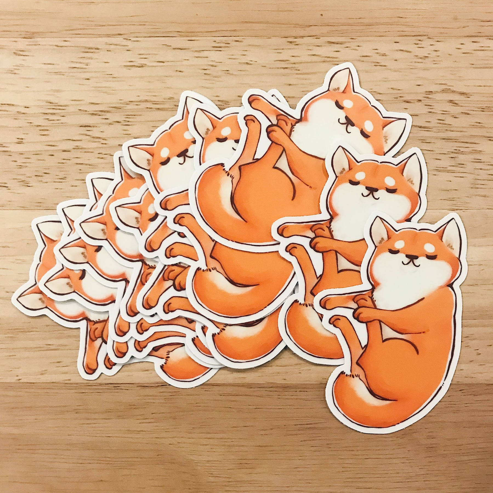
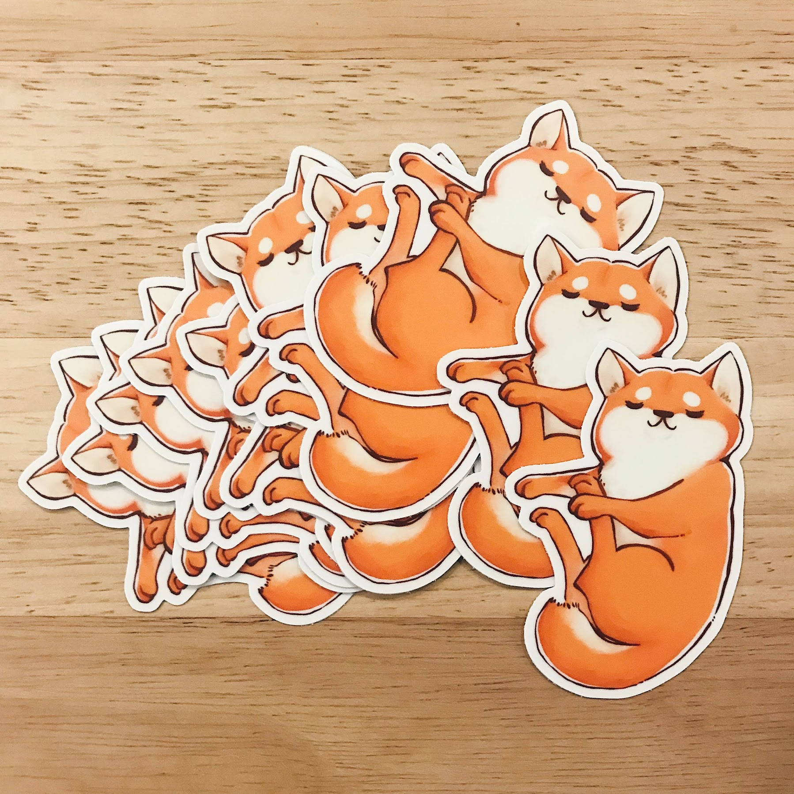

I post my work on my Instagram.
Illustration
I draw! I designed the 2020 “Year of the Rat” mascot for the Wing Luke Museum of the Asian Pacific American Experience. Also I like to make stickers.
 

The Year of the Rat mascot, and shiba stickers
Recently I've been unreasonably into Hobonichi Techo Planners. I used to have three of them. (Three planners.) I have since learned from my past tragedies and have accepted that two planners is about my limit. (Two.)


I also like watercolor!

Photography
I shoot with a Sony Alpha a7III. My current favorite lens is the Voigtlander 40mm f/1.2.


I take a lot of photos of my dog!